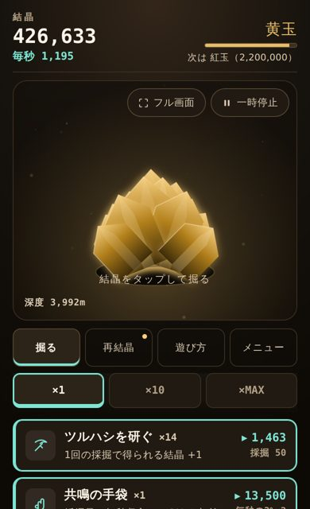
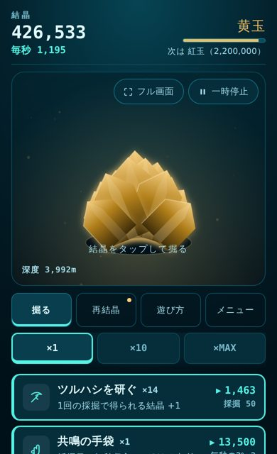
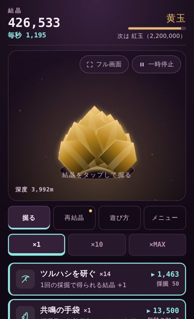
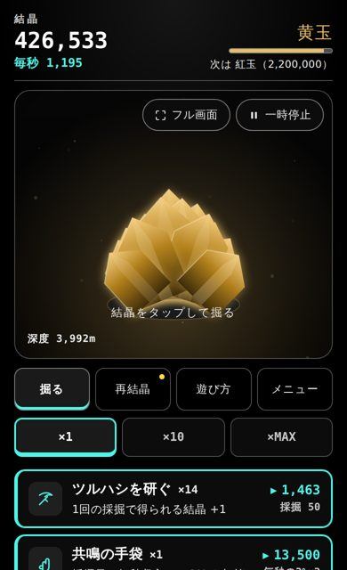
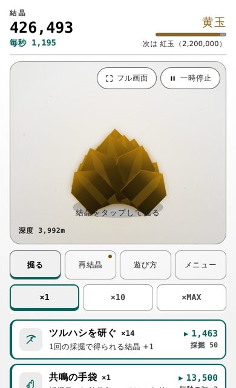

読みやすさの設定
文字の大きさと配色の選び方
結晶洞窟の「文字の大きさ」と「背景と配色」の使い方と、どんな人・どんな場面にどの設定が合うかの目安。
結晶洞窟では、文字の大きさと画面の配色を自分で選べます。このページでは、設定の場所と、どんなときにどれを選ぶとよいかの目安をまとめました。
設定の場所
ゲームの「メニュー」タブを開くと、「文字の大きさ」と「背景と配色」があります。ボタンを押すと、その場ですぐに切り替わります。選んだ設定は自動で保存されるので、次に開いたときもそのままです。
iPhone 本体の「文字サイズ」の設定とは別に、ゲームの中で選ぶ仕組みです。
文字の大きさ（4段階）
「小・標準・大・特大」の4段階です。本文だけでなく、結晶の数、ボタン、タップしたときに浮かぶ「+100」のような数字まで、画面のすべての文字が一緒に大きくなります。
| 大きさ | こんなときに |
|---|---|
| 小 | 一度にたくさんの設備を見渡したいとき |
| 標準 | まずはこれ。迷ったらこのまま |
| 大 | 少し離して持ちたいとき、小さい文字が見えにくいとき |
| 特大 | 読むのがつらいとき。画面の狭い iPhone でも、文字がはみ出さないように確かめてあります |
背景と配色（5種類）
配色は5種類です。上の3つは雰囲気を楽しむ配色、下の2つはコントラストを最大にした「高コントラスト」です。どの配色でも、文字が背景に溶けないように、文字と背景の明るさの差を測って調整しています。





目安は次のとおりです。
- 夜や暗い部屋で遊ぶとき：洞窟・深海・夕闇、または高コントラスト（黒）。画面がまぶしくなりにくい配色です
- 屋外や明るい場所で遊ぶとき：高コントラスト（白）。日差しの中でも文字が読みやすくなります
- 文字が背景に溶けて見えるとき：高コントラスト（黒）か（白）。文字と背景の差がいちばん大きい配色です
色が見分けにくい方へ
このゲームは、大事な情報を色だけで伝えないようにしています。たとえば、買える設備には値段の前に「▸」の印が付きます。まとめ買いの「×1・×10・×MAX」は、選んでいるものが太字と太い下線で示されます。どの配色を選んでも、色以外の印で区別できます。
動きを減らしたい方へ
iPhone の「設定」→「アクセシビリティ」→「動作」で「視差効果を減らす」をオンにすると、ボーナスの光る球が上下に揺れずに、まっすぐ横切るようになります。タップしたときの結晶のふくらみも小さくなります。ゲームの中で設定する必要はありません。
ちなみに、制作者の設定は
私自身は、文字は「標準」、配色は「深海」で遊んでいます。特別な理由はなく、見たときに「これがいいな」と思ったからです。
読みやすさの設定に、正解はありません。迷ったら、まずは「標準」と「洞窟」で始めて、読みにくいと感じたら大きさや配色を変えてみてください。好きな色で遊ぶのがいちばんです。